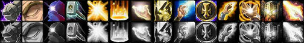
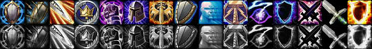

<html>
<head>
<script>
var _
var data=[]
data.n=3
_=data[0]=[]
_.n="Holy"
_=data[0][0]=[2]
_.n="Divine Strength"
_.d="Increases your Strength by $%"
_.m=5
_.x=2
_.y=0
_=data[0][1]=[2]
_.n="Divine Intellect"
_.d="Increases your total Intellect by $%."
_.m=5
_.x=3
_.y=0
_=data[0][2]=[14]
_.n="Spiritual Focus"
_.d="Gives your Flash of Light and Holy Light spells a $% chance to not lose casting time when you take damage."
_.m=5
_.x=2
_.y=5
_=data[0][3]=[3]
_.n="Improved Seal of Righteousness"
_.d="Increases the damage done by your Seal of Righteousness by $%."
_.m=5
_.x=3
_.y=5
_=data[0][4]=[4]
_.n="Healing Light"
_.d="Increases the amount healed by your Holy Light and Flash of Light spells by $%."
_.m=3
_.x=1
_.y=10
_=data[0][5]=[]
_.n="Consecration"
_.d="Consecrates the land beneath the Paladin, doing 384 Holy damage over 8 sec to enemies who enter the area."
_.m=1
_.x=2
_.y=10
_.z=5
_.t=['565 Mana','','Instant cast','8 sec cooldown']
_=data[0][6]=[15,10]
_.n="Improved Lay on Hands"
_.d="Gives the target of your Lay on Hands spell a $% bonus to their armor value from items for 2 min. In addition, the cooldown for your Lay on Hands spell is reduced by $ min."
_.m=2
_.x=3
_.y=10
_=data[0][7]=[5]
_.n="Unyielding Faith"
_.d="Increases your chance to resist Fear and Disorient effects by an additional $%."
_.m=2
_.x=4
_.y=10
_=data[0][8]=[20]
_.n="Illumination"
_.d="After getting a critical effect from your Flash of Light or Holy Light spell, gives you a $% chance to gain Mana equal to the base cost of your spell."
_.m=5
_.x=2
_.y=15
_=data[0][9]=[10]
_.n="Improved Blessing of Wisdom"
_.d="Increases the effect of your Blessing of Wisdom spell by $%."
_.m=2
_.x=3
_.y=15
_=data[0][10]=[]
_.n="Divine Favor"
_.d="When activated, gives your next Flash of Light or Holy Light spell a 100% critical effect chance."
_.m=1
_.x=2
_.y=20
_.r=[8,5]
_.t=['60 Mana','','Instant cast','2 min cooldown']
_=data[0][11]=[10]
_.n="Lasting Judgement"
_.d="Increases the duration of your Judgement of Light and Judgement of Wisdom by $ sec."
_.m=3
_.x=3
_.y=20
_=data[0][12]=[1]
_.n="Holy Power"
_.d="Increases the critical effect chance of your Holy spells by $%."
_.m=5
_.x=3
_.y=25
_=data[0][13]=[]
_.n="Holy Shock"
_.d="Blasts the target with Holy energy, causing 365 to 395 Holy damage to an enemy, or 365 to 395 healing to an ally."
_.m=1
_.x=2
_.y=30
_.z=3
_.r=[10,1]
_.t=['325 Mana','20 yd range','Instant cast','30 sec cooldown']
_=data[1]=[]
_.n="Protection"
_=data[1][0]=[5]
_.n="Improved Devotion Aura"
_.d="Increases the armor bonus of your Devotion Aura by $%."
_.m=5
_.x=2
_.y=0
_=data[1][1]=[6]
_.n="Redoubt"
_.d="Increases your chance to block attacks with your shield by $% after being the victim of a critical strike. Lasts 10 sec or 5 blocks."
_.m=5
_.x=3
_.y=0
_=data[1][2]=[1]
_.n="Precision"
_.d="Increases your chance to hit with melee weapons by $%."
_.m=3
_.x=1
_.y=5
_=data[1][3]=[60,3]
_.n="Guardian's Favor"
_.d="Reduces the cooldown of your Blessing of Protection by $ sec and increases the duration of your Blessing of Freedom $ sec."
_.m=2
_.x=2
_.y=5
_=data[1][4]=[2]
_.n="Toughness"
_.d="Increases your armor value from items by $%."
_.m=5
_.x=4
_.y=5
_=data[1][5]=[]
_.n="Blessing of Kings"
_.d="Places a Blessing on the friendly target, increasing total stats by 10% for 5 min. Players may only have one Blessing on them per Paladin at any one time."
_.m=1
_.x=1
_.y=10
_.t=['75 Mana','30 yd range','Instant cast']
_=data[1][6]=[[16,33,50]]
_.n="Improved Righteous Fury"
_.d="Increases the amount of threat generated by your Righteous Fury spell by $%."
_.m=3
_.x=2
_.y=10
_=data[1][7]=[10]
_.n="Shield Specialization"
_.d="Increases the amount of damage absorbed by your shield by $%."
_.m=3
_.x=3
_.y=10
_.r=[1,5]
_=data[1][8]=[2]
_.n="Anticipation"
_.d="Increases your Defense skill by $."
_.m=5
_.x=4
_.y=10
_=data[1][9]=[5]
_.n="Improved Hammer of Justice"
_.d="Decreases the cooldown of your Hammer of Justice spell by $ sec."
_.m=3
_.x=2
_.y=15
_=data[1][10]=[5,5]
_.n="Improved Concentration Aura"
_.d="Increases the effect of your Concentration Aura by an additional $% and gives all group members affected by the aura an additional $% chance to resist Silence and Interrupt effects."
_.m=3
_.x=3
_.y=15
_=data[1][11]=[]
_.n="Blessing of Sanctuary"
_.d="Places a Blessing on the friendly target, reducing damage dealt from all sources by up to 24 for 5 min.  In addition, when the target blocks a melee attack the attacker will take 35 Holy damage. Players may only have one Blessing on them per Paladin at any one time."
_.m=1
_.x=2
_.y=20
_.z=4
_.t=['135 Mana','30 yd range','Instant cast']
_=data[1][12]=[20]
_.n="Reckoning"
_.d="Gives you a $% chance to gain an extra attack after being the victim of a critical strike."
_.m=5
_.x=3
_.y=20
_=data[1][13]=[2]
_.n="One-Handed Weapon Specialization"
_.d="Increases the damage you deal with one-handed melee weapons by $%."
_.m=5
_.x=3
_.y=25
_=data[1][14]=[]
_.n="Holy Shield"
_.d="Increases chance to block by 30% for 10 sec and deals 130 Holy damage for each attack blocked while active. Damage caused by Holy Shield causes 20% additional threat. Each block expends a charge. 4 charges."
_.m=1
_.x=2
_.y=30
_.z=3
_.r=[11,1]
_.t=['240 Mana','','Instant cast','10 sec cooldown','Requires Shields']
_=data[2]=[]
_.n="Retribution"
_=data[2][0]=[4]
_.n="Improved Blessing of Might"
_.d="Increases the Attack Power bonus of your Blessing of Might by $%."
_.m=5
_.x=2
_.y=0
_=data[2][1]=[3]
_.n="Benediction"
_.d="Reduces the Mana cost of your Judgement and Seal spells by $%."
_.m=5
_.x=3
_.y=0
_=data[2][2]=[1]
_.n="Improved Judgement"
_.d="Decreases the cooldown of your Judgement spell by $ sec."
_.m=2
_.x=1
_.y=5
_=data[2][3]=[5]
_.n="Improved Seal of the Crusader"
_.d="Increases the Attack Power bonus of your Seal of the Crusader and the Holy damage increase of your Judgement of the Crusader by $%."
_.m=3
_.x=2
_.y=5
_=data[2][4]=[1]
_.n="Deflection"
_.d="Increases your Parry chance by $%."
_.m=5
_.x=3
_.y=5
_=data[2][5]=[5]
_.n="Vindication"
_.d="Gives the Paladin's damaging melee attacks a chance to reduce the target's Strength and Agility by $% for 10 sec."
_.m=3
_.x=1
_.y=10
_=data[2][6]=[1]
_.n="Conviction"
_.d="Increases your chance to get a critical strike with melee weapons by $%."
_.m=5
_.x=2
_.y=10
_=data[2][7]=[]
_.n="Seal of Command"
_.d="Gives the Paladin a chance to deal additional Holy damage equal to 70% of the damage of the attack. Only one Seal can be active on the Paladin at any one time. Lasts 30 sec.<br><br>Unleashing this Seal's energy will judge an enemy, instantly causing 169 to 187 Holy damage, 339 to 373 if the target is stunned."
_.t=['210 Mana','','Instant cast']
_.m=1
_.x=3
_.y=10
_.z=5
_=data[2][8]=[4]
_.n="Pursuit of Justice"
_.d="Increases movement and mounted movement speed by $%. This does not stack with other movement speed increasing effects."
_.m=2
_.x=4
_.y=10
_=data[2][9]=[15]
_.n="Eye for an Eye"
_.d="All spell criticals against you cause $% of the damage taken to the caster as well. The damage caused by Eye for an Eye will not exceed 50% of the Paladin's total health."
_.m=2
_.x=1
_.y=15
_=data[2][10]=[25]
_.n="Improved Retribution Aura"
_.d="Increases the damage done by your Retribution Aura by $%."
_.m=2
_.x=3
_.y=15
_=data[2][11]=[2]
_.n="Two-Handed Weapon Specialization"
_.d="Increases the damage you deal with two-handed melee weapons by $%."
_.m=3
_.x=1
_.y=20
_=data[2][12]=[]
_.n="Sanctity Aura"
_.d="Increases Holy damage done by party members within 30 yards by 10%. Players may only have one Aura on them per Paladin at any one time."
_.t=['Instant']
_.m=1
_.x=3
_.y=20
_=data[2][13]=[3]
_.n="Vengeance"
_.d="Gives you a $% bonus to Physical and Holy damage you deal for 8 sec after dealing a critical strike from a swing, spell or ability."
_.m=5
_.x=2
_.y=25
_.r=[6,5]
_=data[2][14]=[]
_.n="Repentance"
_.d="Puts the enemy target in a state of meditation for up to 6 sec. Any damage caused will awaken the target. Only works against Humanoids."
_.m=1
_.x=2
_.y=30
_.t=['60 Mana','20 yd range','Instant cast','1 min cooldown']
</script>
</head>
<body>
<!--[if lte IE 6]>




<![endif]-->
</body>
</html>